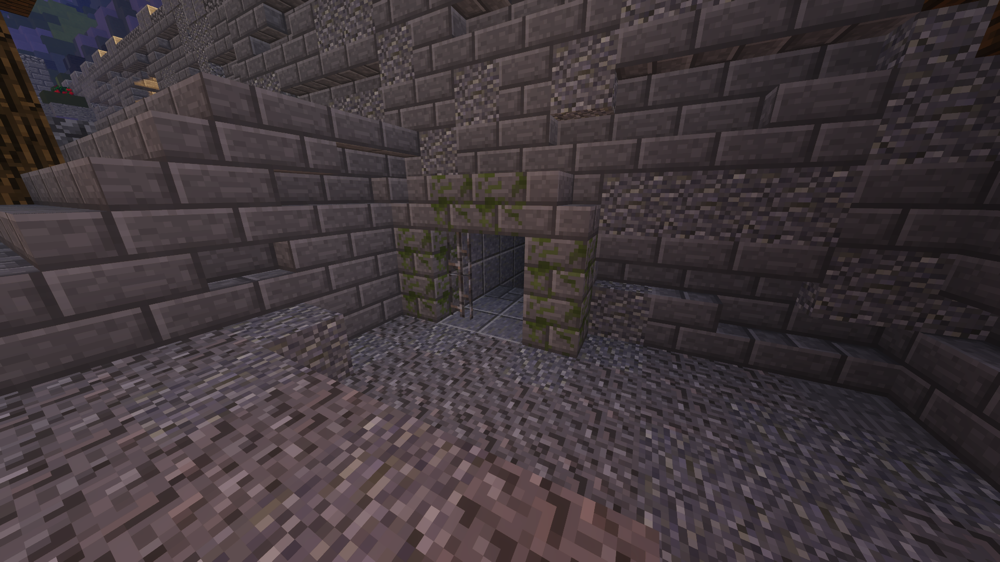

|
|  |
| From top to bottom: A treasure in the sewers, an entrance to the sewers. |
From the Hypixel Pit Wiki
The Sewers are a sub-area of the City section of the Castle map. They can be accessed through multiple locations, including but not limited to several houses in City, a large grate in City, a grotto on the border between Farms and City, and a cave in Forest. They house the Sewerfish NPC and Sewer Treasures.
Typical blocks (obsidian, cobblestone, wood, bedrock) cannot be placed in the sewers.
Sewer Treasures are chests that can be found throughout the Sewers. There can only be up to one in the sewers at any given time. Ten to thirty seconds after the previous treasure was looted, a new one will generate in a different location, notifying all players in the sewers of its presence. The first player to open it receives all its loot, notifying players again and causing the chest to disappear. On average, three items spawn in every chest.
The following items can be found in Sewer Treasures:
- 100 XP
- 200 gold
- Diamond chestplates or leggings
- Sewer Rubbish
- Sewer Blocks ×32 (dark prismarine bricks) or Annoying Sewer Blocks ×32 (soul sand), which can be placed in the sewers
- Radioactive Boots, rarely. Radioactive Boots are as strong as leather, have no special effects, and are lost on death.
- Milk Buckets, rarely, which can be used to bake a Mini Cake or consumed to gain Regeneration I (2:00)
- Fresh Sewer Pants, extremely rarely (1/291 per item generated)
A silverfish NPC named the Sewerfish will appear in a random preset location in the Sewers, changing every three real-life days starting when the Castle map was rotated in. If a player right-clicks them while holding 64 Sewer Rubbish, the Sewerfish will take the Sewer Rubbish, granting the player Fresh Sewer Pants in return. If the player is holding something else or is not holding enough Sewer Rubbish, they will instead deal 0.75♥︎ of damage to the player.